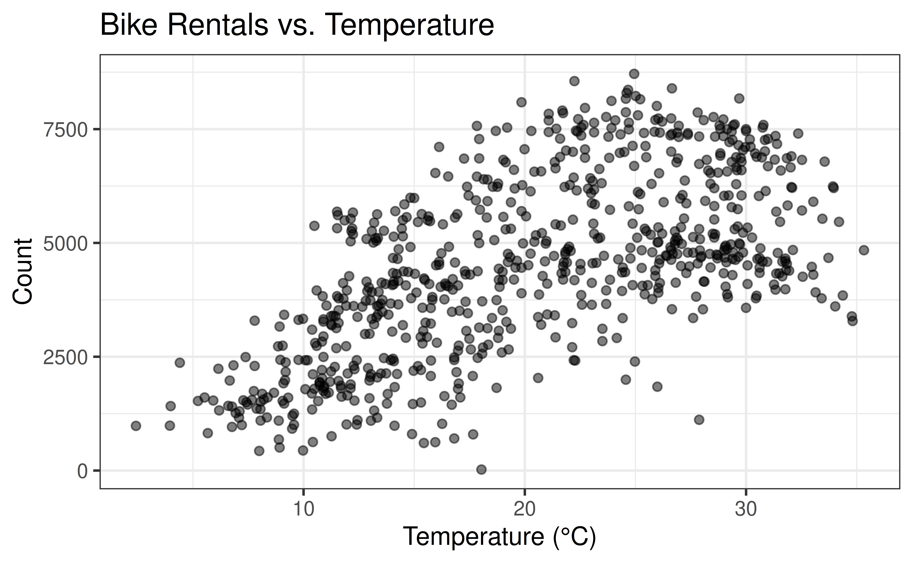
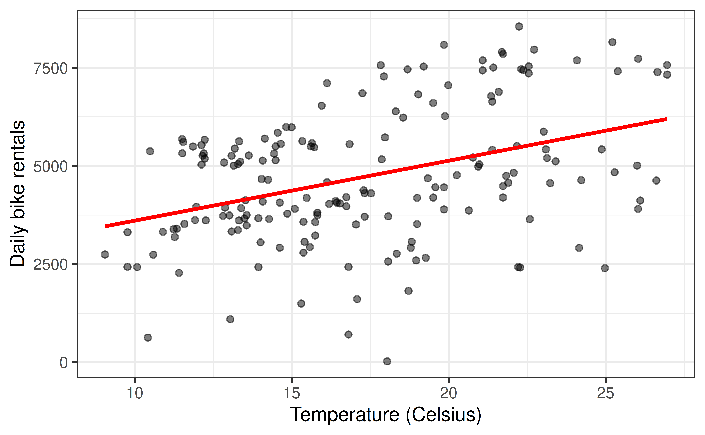
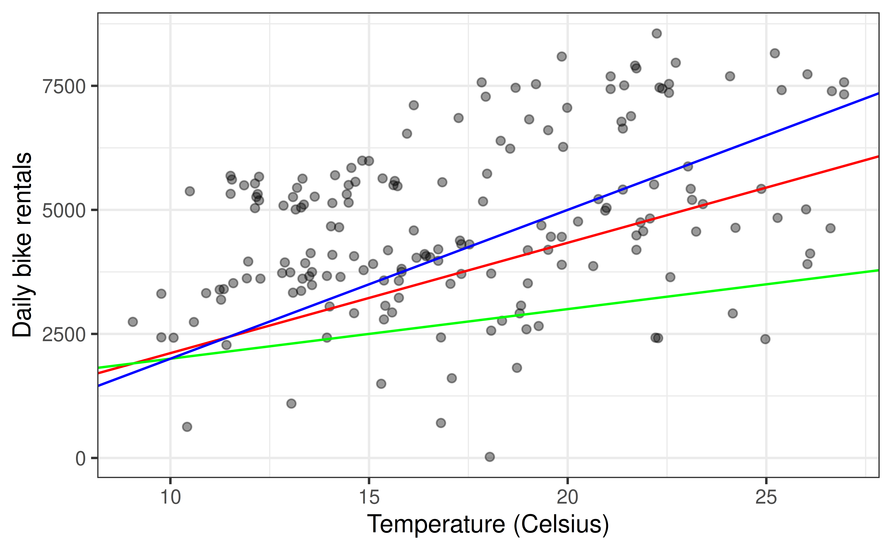
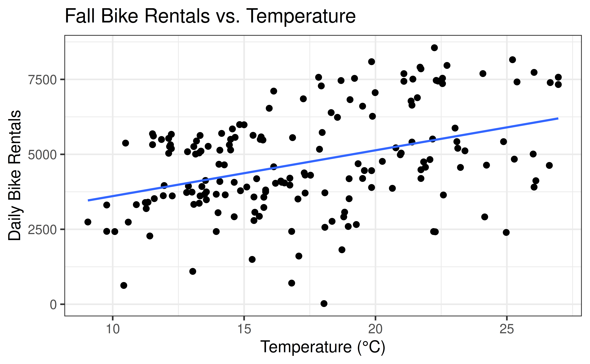

Simple Linear Regression
Prof. Eric Friedlander
Topics
- Use simple linear regression to describe the relationship between a quantitative predictor and quantitative response variable.
- Estimate the slope and intercept of the regression line using R.
Data
DC Bikeshare
Our data set contains daily rentals from the Capital Bikeshare in Washington, DC in 2011 and 2012. It was obtained from the dcbikeshare data set in the dsbox R package.
We will focus on the following variables in the analysis:
count: total bike rentalstemp_orig: Temperature in degrees Celsiusseason: 1 - winter, 2 - spring, 3 - summer, 4 - fall
Click here for the full list of variables and definitions.
Last time
- Coloring and faceting our plots
- Used
mutateto recodeseasonas afactorwithwinter,fall,summer,spring - Talked about how to use
filterto select certain observations - Noticed that the relationship between
countandtemp_origdidn’t really look linear:- About to use
filterfor each group to select a season
- About to use
Filtering our data
Filtering
| ID | Thing1 | Thing2 | Thing3 |
|---|---|---|---|
| 1 | 100 | 200 | “Bleg” |
| 2 | 20 | 20 | “Bleg” |
| 3 | 30 | 40 | “Fleg” |
| 4 | 120 | 120 | “Fleg” |
- To keep some observations use
filter([insert true/false statement here])and filter will keep all rows where the inside is true. Examples:Thing2 <= 100: keeps all rows whereThing2is less than or equal to 1000Thing3 == "Fleg": keeps everything whereThing3equals"Fleg"? (Always write strings in quotes)Thing1 != Thing2: keeps everything whereThing1isn’t equal toThing2?
Activity time: Picking up where we left off
- Get in same groups as last time
- Rotate rolls if you feel comfortable with someone else typing on your computer (Coder -> Communicator -> Developer -> Coder)
- Let’s divide up the seasons
- I’m doing fall
- Do Exercises 7 & 8
- Note: Exercise 7 is a challenge that is unrelated to choosing a season
Sample Solution For 8
Rentals vs Temperature
Goal: Fit a line to describe the relationship between the temperature and the number of rentals in your season.

Simple linear regression (SLR)
SLR: Statistical model
- Simple linear regression: model to describe the relationship between \(Y\) and \(X\) where:
- \(Y\) is a quantitative/numerical response
- \(X\) is a single quantitative predictor
- \[\Large{Y = \mathbf{\beta_0 + \beta_1 X} + \epsilon}\]
- \(\beta_1\): True slope of the relationship between \(X\) and \(Y\)
- \(\beta_0\): True intercept of the relationship between \(X\) and \(Y\)
- \(\epsilon\): Error
SLR: Regression equation
\[\Large{\hat{Y} = \hat{\beta}_0 + \hat{\beta}_1 X}\]
- \(\hat{\beta}_1\): Estimated slope of the relationship between \(X\) and \(Y\)
- \(\hat{\beta}_0\): Estimated intercept of the relationship between \(X\) and \(Y\)
- \(\hat{Y}\): Predicted value of \(Y\) for a given \(X\)
- No error term!
Statistical model vs. regression equation
Statistical model (also known as data-generating model)
\[{\small \text{count} = \beta_0 + \beta_1 ~\text{temp_orig} + \epsilon}\]
Models the process for generating values of the response in the population (function + error)
Regression equation
Estimate of the function using the sample data
\[{\small \hat{\text{count}} = \hat{\beta}_0 + \hat{\beta}_1 ~\text{temp_orig}}\]
Why fit a model?
Prediction: Expected value of the response variable for given values of the predictor variables
Inference: Conclusion about the relationship between the response and predictor variables
What is an example of a prediction question that can be answered using the model of count vs. temperature?
What is an example of an inference question that can be answered using the model of count vs. temperature?
Choosing values for \(\hat{\beta}_1\) and \(\hat{\beta}_0\)

Estimating the regression line in R
Fit model & estimate parameters
Look at the regression output
Call:
lm(formula = count ~ temp_orig, data = fall)
Coefficients:
(Intercept) temp_orig
2077.5 152.9 \[\widehat{\text{count}} = 2077.5 + 152.9 \times \text{temp_orig}\]
Use tidy to make it prettier
We’ll focus on the first column for now…
Using kable to make it extra pretty
Visualize Model

Interpretation
Interpreting the Slope and Intercept
- Slope: For each additional unit of \(X\) we expect \(Y\) to increase by \(\hat{\beta}_1\), on average.
- Intercept: If \(X\) were 0, we predict \(Y\) to be \(\hat{\beta}_0\)
Fall Example
- Slope: For each addition degree Celcius we expect the number of bike rentals to increase by 152.87 on average, in the Fall.
- Intercept: If the temperature were 0 degrees Celcius, we predict the number of bike rentals to be 2077.48 in the Fall.
Does it make sense to interpret the intercept?
✅ The intercept is meaningful in the context of the data if
the predictor can feasibly take values equal to or near zero, or
there are values near zero in the observed data.
🛑 Otherwise, the intercept may not be meaningful!
- Note meaningful doesn’t mean wrong
Complete the remainder of the exercises.
Prediction
Fall Model
\[\begin{aligned} \widehat{Y} &= 2077.48 + 152.87 \times X\\ \widehat{\text{count}} &= 2077.48 + 152.87 \times \text{temp_orig} \end{aligned}\]On the white board: Suppose that it’s 15 degrees Celsius outside. According to this model, how many bike rentals should we expect if it’s your season?
Making a prediction
On the white board: Suppose that it’s 15 degrees Celsius outside. According to this model, how many bike rentals should we expect if it’s your season?
\[\begin{aligned} \widehat{\text{count}} &= 2077.48 + 152.87 \times \text{temp_orig}\\ &= 2077.48 + 152.87 \times 15 \\ &= 4370.53 \end{aligned}\]About 4,371 rentals!
Prediction in R
predictfunction takes two arguments- First: a model that’s been fit
- Second: a new dataset with the same column names as the dataset used to train the model
Examples
Exercise 14
- Add a new exercise to your activity (you can start by copy pasting a previous exercise and answer block).
- Confirm you answer to the white board question using the
predictin R. I.e. what would you model predict the number of bike rentals to be if it was 15 degrees out.
Recap
- Simple linear regression (SLR) describes the relationship between a quantitative predictor (\(X\)) and response (\(Y\)).
- The statistical model: \(Y = \beta_0 + \beta_1 X\)
- The regression equation: \(\hat{Y} = \hat{\beta}_0 + \hat{\beta}_1 X\)
- \(\hat{\beta}_1\) (slope): estimated change in \(Y\) for each unit increase in \(X\)
- \(\hat{\beta}_0\) (intercept): estimated value of \(Y\) when \(X = 0\)
- SLR can be used for prediction and inference